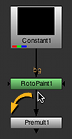
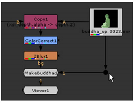

When you add or paste nodes into a script, Nuke automatically generates pipes between the currently selected node and the new nodes. As you build up a script, you’ll need to move these pipes, or run new pipes between nodes. In Nuke, you make such modifications by dragging on the back end of the pipe (the end without the arrowhead).
Disconnecting Nodes
You can disconnect nodes by either dragging the head or tail of the connecting arrow to an empty area of the workspace, or selecting the lower node in the tree and presssing Ctrl/Cmd+D.
|  |

|
Reconnecting Nodes
You can reconnect a node by dragging the head or tail of the connecting arrow and drop it over the center of the node that want to connect.

|
| Reconnecting a pipe. |
NOTE: Nuke distinguishes the dual inputs that may run into a Merge node with the labels A and B. A refers to the foreground element, and B to the background element. Nuke always copies from the A input to the B. This means that if you later decide to disable the node associated with an A input, the data stream keeps flowing because, by default, it uses the B input.
Duplicating a Connecting Arrow
To duplicate a connecting arrow, hold Shift and drag the connecting arrow on top of the node you want to create a connection to. Nuke duplicates the connecting arrow, leaving the original connection untouched.
Adding a Node Between Nodes
To add a node between two connected nodes, drag the node into the space between the already connected nodes. As you do so, you see the link between these two nodes become active. When that happens, simply release the node you are dragging and it is automatically placed and connected between the two nodes.
Bending Connecting Arrows
To bend connecting arrows, do the following:
| 1. | Select the node before the connector you want to bend. |
| 2. | From the Toolbar, select Other > Dot. |
A dot appears after the selected node, causing a bend in the connector.
| 3. | Drag the dot as necessary to reposition the bend. |
TIP: You can also add a dot to an existing connection by pressing Ctrl/Cmd and clicking on the yellow dot that appears on the connecting arrow.
